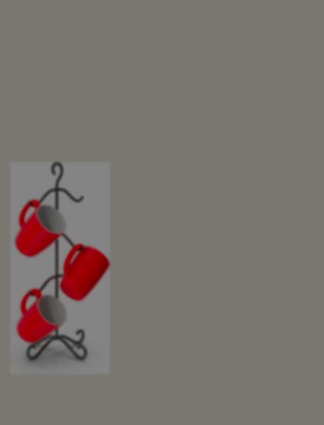
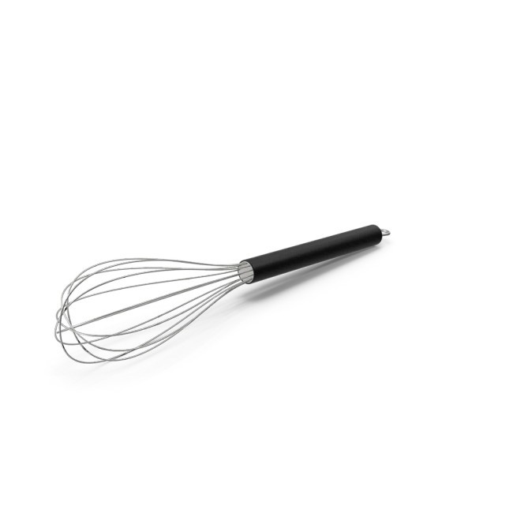

IoU 0.912 · 6810 ms
เขียวเส้นทึบ = เฉลย · ส้มเส้นประ = โมเดล · ภาพที่ไม่มีกรอบสีเขียวคือกรณีที่สินค้าเป้าหมายไม่ปรากฏ
IoU 0.912 · 6810 ms

IoU 0.850 · 2567 ms

IoU 0.683 · 4340 ms

IoU 0.000 · 3538 ms

เว้นกรอบถูกต้อง · 1897 ms

เว้นกรอบถูกต้อง · 2041 ms
ภาพต้นฉบับ · Ministerio de Relaciones Exteriores del Perú (Cancillería del Perú) · CC BY-SA 2.0 · ปรับขนาดและซ้อนกรอบเพื่อวัดตำแหน่งภาพสินค้าและฉากจำลองดัดแปลงจาก DummyJSON มีการปรับขนาดและซ้อนกรอบเปรียบเทียบ